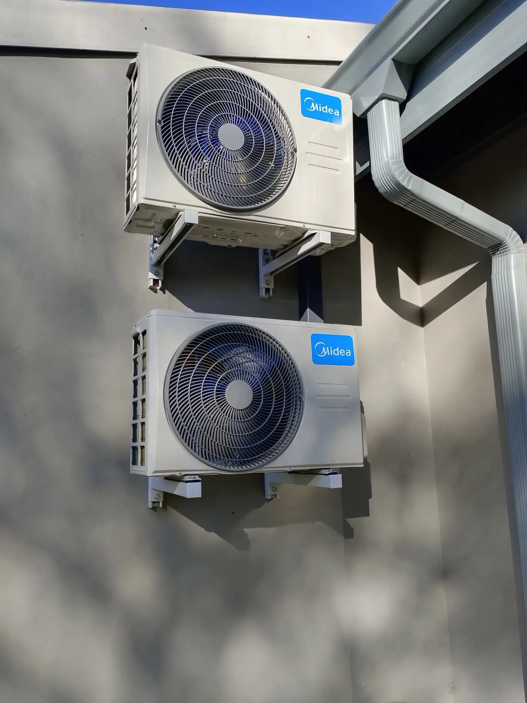

A non-functional split aircon unit or a down central heating and cooling network can immediately ruin environmental productivity at work or home comfort. Whether your setup is blowing lukewarm air, leaking condensation inside, emitting continuous knocking noises, or failing to activate entirely — MyFixer responds with immediate local technician assistance.
Operating transparently out of our centralized workshop network, our field specialists service properties throughout Centurion, Pretoria, Johannesburg, Sandton, Randburg, and Roodepoort. Review our public Google Business profile for real-time neighborhood response availability metrics.
Our technicians address mechanical imbalances, coolant pressures, and tricky electronics correctly. We repair standard wall split AC units, commercial ducted applications, hidden cassette systems, and energy-conscious inverter setups. Our experts work with premium brands, offering field support for Samsung aircons, LG, Daikin, Midea, Defy, and Kelvinator cooling systems.
Unblocking micro-filters, correcting fan balance issues, and evaluating ventilation output speeds.
Pinpointing electronic gas line leaks, pressure testing copper runs, and recharging R410a, R22, and R32 gases.
Replacing dead contactor relays, blown run capacitors, and resetting outdoor condenser control faults.
Balancing loose fan blades, changing worn motor bearings, and isolating noisy compressor assemblies.
Recalibrating climate control walls, matching digital inputs, and resolving PCB signal lag faults.
Flushing obstructed gravity drain pans, treatment of algae blocks, and installing internal condensate lift pumps.